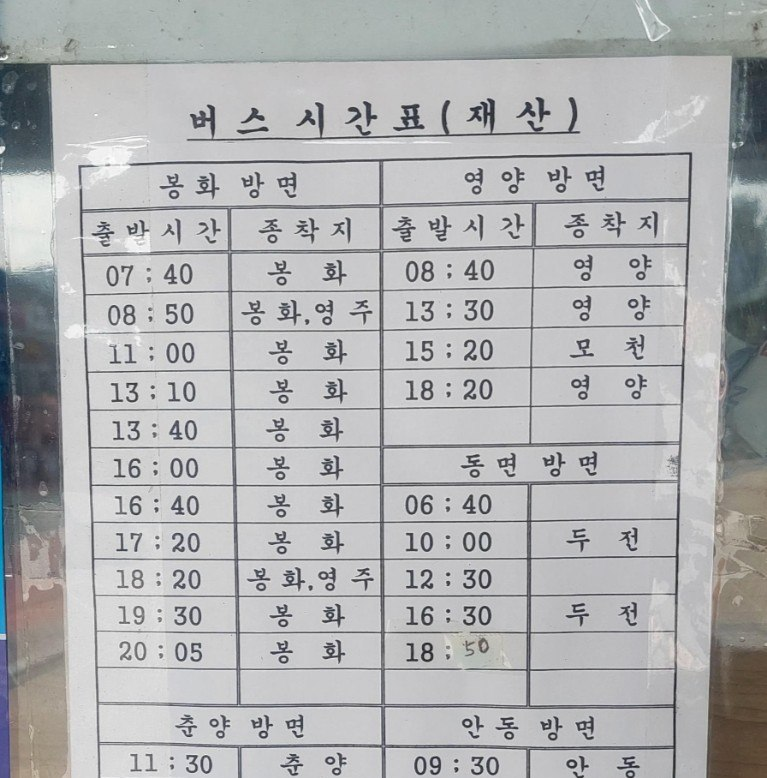

내버스시간표
정류장 이름과 시간표 사진만 등록하세요. 화면에는 글자만 크게 보여 드립니다.
내 정류장
등록된 정류장이 없습니다.
사진찍기 가이드

- 시각·숫자가 휴대폰 화면에 크게 보이게 가까이 찍어 주세요.
- 흐림·빛 반사가 없도록 해 주세요.
- 표마다 모양이 달라, 일부는 줄 글자로만 보일 수 있습니다.
시간표 (글자로 보기)
글자가 비어 있습니다. 아래 「사진 다시 찍기」로 깨끗하게 다시 찍어 주세요.
지금 시각
--:--:--
정류장 이름과 시간표 사진만 등록하세요. 화면에는 글자만 크게 보여 드립니다.
등록된 정류장이 없습니다.

시간표 (글자로 보기)
글자가 비어 있습니다. 아래 「사진 다시 찍기」로 깨끗하게 다시 찍어 주세요.